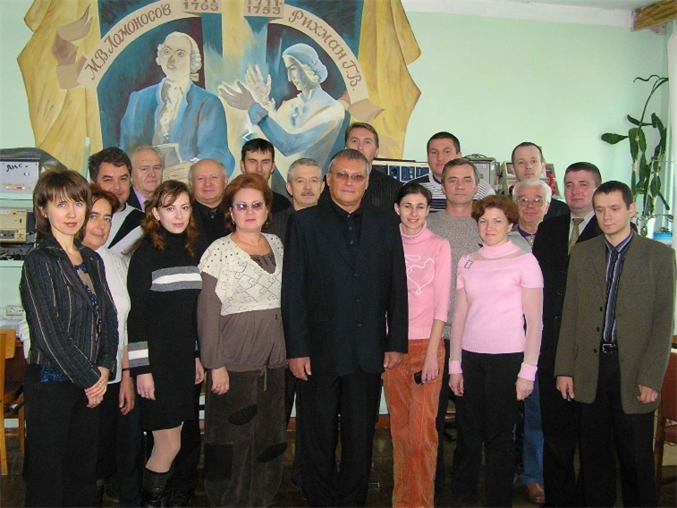

Історична довідка
Кафедра КІЕ створена у 2021 році на базі кафедр комп’ютерних інформаційних систем та електронних апаратів (наказ №112-1 від 29.06.2021). Очолює кафедру д.т.н., доцент Перекрест Андрій Леонідович.
Наразі кафедра КІЕ веде підготовку здобувачів за освітньо-кваліфікаційними рівнями «бакалавр», «магістр» за спеціальністю 123 «Комп’ютерна інженерія», «бакалавр» - спеціальністю 171 «Електроніка», «магістр» - спеціальністю 171 «Телекомунікації та радіотехніка» та рівня «доктор філософії» за напрямом «Інформаційні технології».
Кафедра комп’ютерних та інформаційних систем
Кафедру «Комп’ютерні та інформаційні системи» (початкова назва «Комп’ютерна техніка та програмування») було створено у січні 1994 року з ініціативи директора Кременчуцького філіалу Харківського політехнічного інституту В.Є. Маслова, як загальноосвітню, з метою забезпечення базової комп’ютерної підготовки студентів усіх спеціальностей. Очолив кафедру канд. техн. наук, доцент В.С. Титаренко, під керівництвом якого протягом 1994–95 років було сформовано дружний, працелюбний, цілеспрямований колектив з викладачів кафедри «Автоматизація виробничих процесів та робототехніки», фахівців обчислювального центру філіалу (асистенти Т.В. Хабло, Ю.В. Лашко, О.В. Усенко, О.М. Мотолига, В.С. Киба) до яких доєдналися випускники університетів (асистенти В.М. Сидоренко, В.Ю. Кучеренко (Бельська), А.Л. Юдіна (Смірнова), Ю.В. Зілінський, Н.О. Маслова), була створена матеріально-технічна база кафедри (два комп’ютерні класи, укомплектовані персональними комп’ютерами «Іскра-226» та термінальною станцією на вісім робочих місць), розроблене навчально-методичне забезпечення та організований навчальний процес.
Перший склад кафедри (перший зліва В.С. Титаренко). Перша річниця заснування кафедри, 23 лютого 1995 року
Відповідно до потреб міста та регіону велась цілеспрямована робота кафедри і керівництва філіалу з метою відкриття підготовки спеціалістів з комп’ютерних технологій. В 1997 році кафедру очолив канд. техн. наук, доцент М.І. Гученко, під керівництвом якого в 1998 році була ліцензована підготовка інженерів за спеціальністю 7.091501 – „Комп’ютерні системи та мережі” за денною формою навчання. Кафедра стала випускною. М.І. Гученко також започаткував підготовку на кафедрі наукових кадрів (асистенти Ю.В. Лашко та В.М. Сидоренко), було відкрито аспірантуру, докторантуру та закладено основи наукової школи кафедри.
У 1999–2000 рр. кафедру очолював канд. техн. наук, доцент О.П. Чорний, під керівництвом якого активізувалася робота за напрямом «Комп’ютерні технології в дослідженні електромеханічних систем, створення віртуального обладнання для навчального процесу і наукових досліджень». За цей час було створено та укомплектовано сучасною комп’ютерною технікою і програмним забезпеченням два нові комп’ютерні класи, розроблене навчально-методичне забезпечення дисциплін циклу бакалаврської підготовки за напрямом „Комп’ютерна інженерія”.
У 2000 році кафедра «Комп’ютерна техніка та програмування» була реорганізована в кафедру «Комп’ютерні та інформаційні системи». Очолив кафедру проректор із наукової роботи, канд. техн. наук, проф. А.В. Луговой, який довгий час здійснював наукове та методичне керівництво впровадженням в університеті комп’ютерних технологій, виконанням важливих науково-дослідних робіт з розробки автоматизованих систем керування підприємствами та технологічними процесами на багатьох підприємствах країни. Заступником завідувача кафедри був призначений доцент Г.Ю. Сисюк, який розпочав цілеспрямовану роботу зі створення спеціалізованих лабораторій для студентів спеціальності „Комп’ютерні системи та мережі”. У 2005 році кафедра отримала ліцензію на підготовку магістрів за спеціальністю 8.091501 – „Комп’ютерні системи та мережі”. До складу співробітників кафедри входять О.А. Дурницька (Чорна) (2000 р.), Н.Л. Сохін та Т.О. Фролова (Бєлікова) (2003 р.).
У 2008 та 2009 роках відповідно до складу кафедри увійшли майбутні кандидати наук, доценти О.Г. Славко та П.П. Костенко (керівник проф. М.І. Гученко), які почали активно розвивати студентську науку та міжнародні зв’язки. У 2017 році О.Г. Славко і П.П. Костенко як колектив авторів стають лауреатами премії Президента України для молодих учених.
Професор М.І. Гученко (третій зліва) серед виконавців наукової роботи «Розробка наукових основ і створення багатофункціональних радіоелектронних систем, впровадження їх у сучасних авіаційних та навчально-тренувальних комплексах з метою підвищення безпеки польотів» на церемонії вручення Президентом Національної академії наук України академіком Б.Є. Патоном (п'ятий зліва) Державної премії України в галузі науки і техніки 2010 року
Проректор з наукової роботи В. В. Нікіфоров (у центрі) та професор М. І. Гученко (праворуч) у процесі виконання науково-дослідної роботи з вивчення екологічного стану Кременчуцьких плавнів спостерігають за польотом безпілотного вертольота з дослідною апаратурою (2008 р.)
Візит на кафедру делегації Національної академії наук України у складі академіка В. М. Кунцевича (в центрі) та член-кореспондента А. О. Чикрія (ліворуч) з нагоди відкриття при кафедрі постійнодіючого наукового семінару Української асоціації автоматичного керування «Проблеми керування в інформаційно-управляючих та ергатичних системах» під керівництвом д.т.н., професора М. І. Гученка (праворуч). Відвідання НВО "АВІА", 2009 р.
Основними науковими напрямками кафедри є:
«Проблеми керування в інформаційно-управляючих та ергатичних системах», науковий керівник д.т.н., професор М.І. Гученко, лауреат Державної премії України в галузі науки і техніки (2010 р.)
«Дослідження і моделювання шляхів віртуалізації глобального інформаційного середовища», науковий керівник к.т.н., професор А.В. Луговой, заслужений працівник освіти України, кавалер ордена «За заслуги» ІІІ ступеня, кавалер знака «Петро Могила»
«Моніторинг складних систем на основі інтелектуального аналізу даних», науковий керівник к.т.н., доцент В.М. Сидоренко
За даними напрямами захищено одну докторську і п’ять кандидатських дисертацій.
З 2018 по 2020 рік кафедру знову очолює док. техн. наук, професор, Лауреат Державної премії України в галузі науки і техніки М.І. Гученко, а з 2020 року – канд. тех. наук, доцент В.М. Сидоренко. Наразі кафедра активно співпрацює з провідними компаніями IT-напрямку в частині підготовки висококваліфікованих фахівців та є учасником низки міжнародних і вітчизняних наукових проектів.
Кафедра електронних апаратів
Кафедра «Електронні апарати» була створена наказом ректора КДПІ № 84-1 від 26 травня 1999 р. Завідувачем кафедри був призначений кандидат технічних наук, доцент Мосьпан Владислав Олександрович. Створення кафедри було зумовлено необхідністю забезпечення підготовки фахівців за напрямом 0910 – «Електронні апарати». Нова кафедра була зорієнтована на найсучасніші освітні технології та базувалась на багаторічному досвіді роботи однієї з найстаріших кафедр інституту, кафедри «Електротехніки та електроніки».
Співробітники кафедри ЕА
Саме вона стала базою для формування всіх кафедр електротехнічного та комп’ютерного спрямування, які пізніше були об’єднані в Інститут електромеханіки, енергозбереження та комп’ютерних технологій і факультет електроніки та комп’ютерної інженерії.
На момент створення кафедра «Електронні апарати» мала найпотужніший в університеті науково-педагогічний склад. На ній працювали доктори і фізико-математичних наук, професори Єлізаров О.І. та Богобоящий В.В., доктор технічних наук, професор Андрусенко О.М., к.т.н., професор Маслов В.Є., к.т.н., доценти Мосьпан В.О., Мичковський Ю.Г., Некрасов В.О., Некрасов А.В., Стрижак В.Д., Білий П.М., Солонар Д.П., Пивоваров М.М., Смирницький Б.В., Решетняк В.І., канд. мед. наук, доценти Негрій О.І., Ємченко В.І. Був сформований прогресивний дієздатний творчий колектив однодумців, де разом із знаними науковцями успішно і плідно працювала талановита молодь і досвічені фахівці з відповідних галузей науки і техніки. Це старші викладачі Бездєнєжних І.Б., Лугова О.В., Міхальчук В.І., Міхальчук О.П., Шевченко С.В., Саньков С.В., Сніщенко Р.Г., Ткаченко С.В., Фомовський Ф.В., Якимець С.М., Яні С.В., асистенти Ардашов С.А., Заблоцька Т.Ю., Фомовська О.В., Постіл І.І.
У непростих умовах економічних негараздів, перебудови системи вищої освіти зусиллями цих людей була розв’язана складна задача – одержані державні ліцензії та акредитаційні сертифікати на проведення освітньої діяльності за освітньо-кваліфікаційними рівнями: бакалавр – напряму 0910 – «Електронні апарати» в обсязі 105 осіб, спеціаліст – за спеціальностями: 7.091001 – «Виробництво електронних засобів» за спеціалізацією «Електронні апарати банківських систем та засоби захисту інформації» – 25 осіб (куратор спеціальності старш. викладач Сніщенко Р.Г.), 7.091002 – «Біотехнічні та медичні апарати і системи» – 50 осіб (куратор спеціальності канд. мед. наук, доцент Негрій О.І.), 7.091003 – «Електронна побутова апаратура» – 25 осіб (куратор спеціальності старш. викладач Фомовський Ф.В.), магістр – за спеціальністю 8.091002 – «Біотехнічні та медичні апарати і системи» – 5 осіб (куратор спеціальності канд. мед. наук., доцент Негрій О.І.).
Кафедрою була забезпечена якісна підготовка фахівців за всіма зазначеними рівнями і напрямами, що підтверджено оцінками державних екзаменаційних комісій і відгуками підприємств і установ як на теренах України, так і за її межами, де успішно працюють наші випускники.
Становлення нового напряму підготовки потребувало надзвичайних зусиль від кожного учасника цього процесу і в методичній, і в науковій, і в організаційній роботі. Достатньо нагадати, що кількість навчальних дисциплін, які викладалися кафедрою, за окремі роки перевищувала 80, а кожна з них вимагала відповідного якісного методичного, наукового і матеріального забезпечення. І у розв’язанні цих проблем значну роль відіграли зв’язки кафедри з провідними навчальними закладами, промисловими підприємствами та установами.
Плідні творчі зв’язки встановилися із кафедрою конструювання і виробництва радіоелектронної апаратури НТУУ КПІ (зав. каф. академік Зіньковський Ю.Ф.), кафедрами біотехнічної та медичної апаратури (зав. каф. д-р фіз.-мат. наук Бих А.І.) та автоматизації проектування радіоелектронної апаратури (зав. каф. д-р техн. наук Невлюдов І.Ш.) Харківського національного університету радіоелектроніки та іншими навчальними закладами України, що здійснюють підготовку фахівців за напрямом 0910 – Електронні апарати. Значну роль у формуванні матеріально-технічної бази кафедри відіграли і продовжують відігравати лікувальні заклади Кременчука, завод ВАТ «Олімп» м. Світловодськ, ПТК «Візит», Кременчуцьке відділення Приватбанку та інші підприємства й установи реґіону, які допомагають обладнати спеціалізовані лабораторії кафедри необхідним устаткуванням, і є основними працедавцями для випускників.
Ефективна підготовка фахівців потребує від кожного викладача постійного наукового зростання та вдосконалення. Кафедрою проводяться наукові дослідження з напряму “Методи і засоби генерації, індикації та визначення параметрів фізичних процесів і полів технічних та біологічних об’єктів”.
За ініціативою д-р фіз.-мат. наук, професора Богобоящого В.В., починаючи з 2001 р., щорічно у листопаді проводиться Всеукраїнська науково-технічна конференція «Фізичні процеси і поля технічних та біологічних об’єктів», яка знайшла підтримку і визнання серед науковців нашої держави та за її межами. Викладачами та докторантами кафедри за часи її існування підготовлені та захищені три докторські дисертації (проф. Андрусенко О.М., проф. Богобоящий В.В., проф. Гученко М.І.), аспірантами та здобувачами – п’ять кандидатських дисертацій (доц. Білий П.М., доц. Мосьпан В.О., доц. Міхальчук В.І., доц. Юрко О.О., доц. Фомовська О.В.).
Головним здобутком та гордістю кафедри є її вихованці – бакалаври, інженери, маґістри. Починаючи з 2000 р., кафедрою підготовлені 631 спеціаліст (інженер) та 26 маґістрів. Серед них дипломи з відзнакою одержали 111 інженерів, 21 маґістр.
Студенти кафедри гідно виступають у другому турі Всеукраїнської студентської олімпіади за напрямом «Електронні апарати», які щорічно проходять у Харкові. Команда у складі В. Мельниченка, Р. Копила, П. Алєксєєва посіла ІІІ загальнокомандне місце 2008 р. А студент Левадній В.В. 2009 р. виборов ІІІ місце в особистому заліку. Найкращі випускники (Ардашов С.А., Гладкий В.В., Григоренко В.Ю., Кухаренко Д.В.) успішно працюють на рідній кафедрі, забезпечуючи такий необхідний для колективу зв’язок поколінь, що є запорукою його сталого розвитку та вдосконалення. Отже, історія не закінчується– попереду багато планів, завдань, проблем та їх, поза всяким сумнівом, успішне подолання.